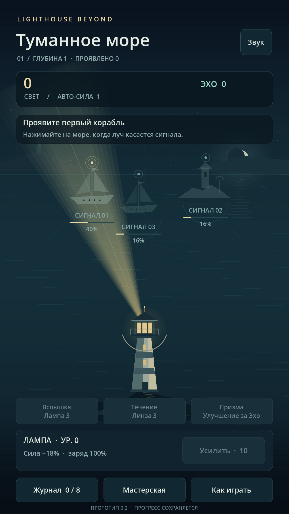
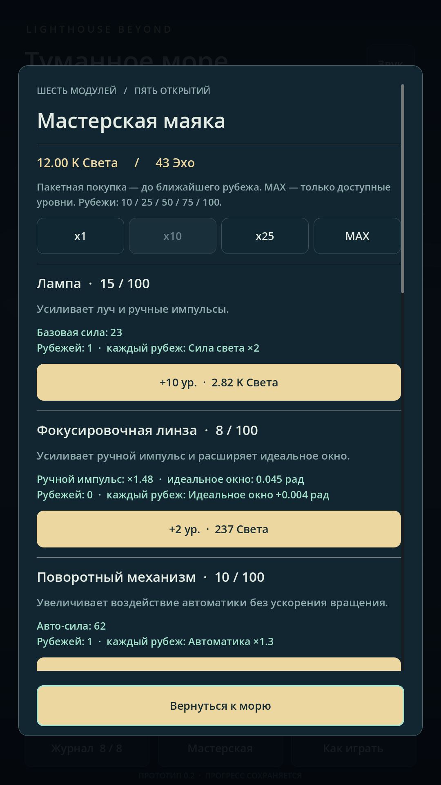
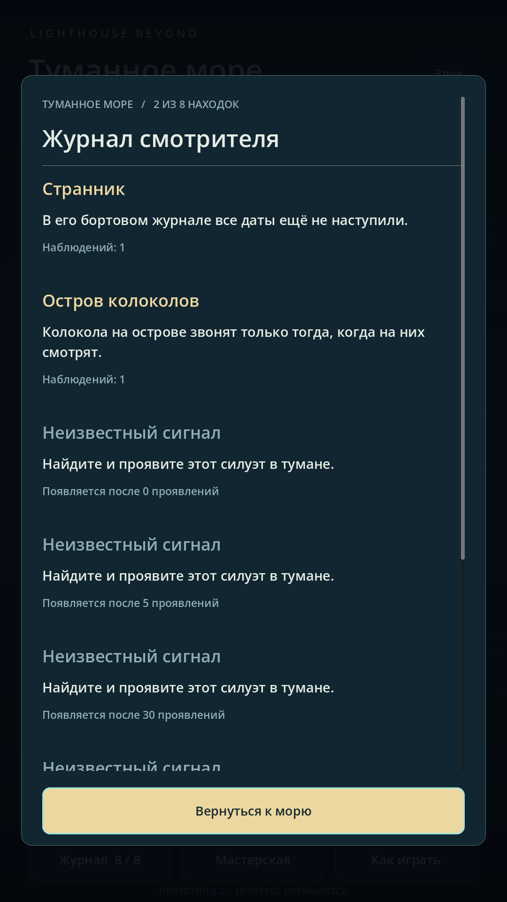

Дневник разработки
Мы начали разработку Lighthouse Beyond Idle
Мы начали делать Lighthouse Beyond Idle — атмосферную игру о смотрителе маяка на краю реальности. Здесь свет помогает не только видеть: он возвращает морю забытые очертания.

В основе — простое действие: направить луч на силуэт и проявить то, что скрывает туман. Найденный Свет помогает улучшать маяк, усиливать лампу и развивать автоматику. Хотим, чтобы короткие возвращения к морю складывались в большое, неспешное путешествие.
Первые версии были посвящены самому важному: ощущению луча, появлению кораблей, понятным улучшениям и сохранению прогресса. Мастерская и Журнал уже намечали будущий ритм игры — находить, улучшать и узнавать историю этого места.
Первые кадры прототипа
Так выглядела версия 0.2: раннее море, Мастерская и Журнал. Это сохранённые снимки первых сборок — интерфейс и оформление с тех пор изменились. Нажмите на кадр, чтобы рассмотреть его в полном размере.



Один сигнал за раз
Дальше нам предстоит наполнить море новыми встречами, дать свету новые возможности и найти правильный темп путешествия. Будем делиться изменениями здесь — от первых силуэтов до следующего горизонта.